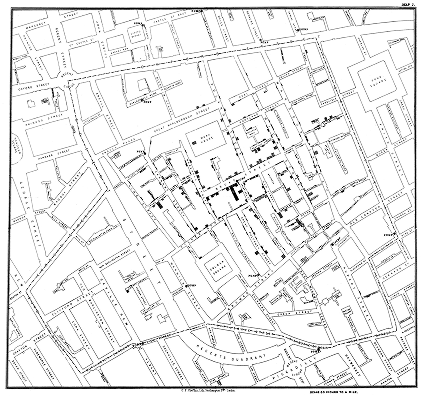

19세기 영국에서 콜레라로 엄청난 인명 피해가 발생했다. 많은 의사가 나쁜 공기가 원인이라 생각하고 있을 때, 1854년 런던의 의사 존 스노(Snow, John)는 콜레라의 원인을 직접 알아보기 위해 지도의 각 주소에 사망자 수를 검은 사각형으로 표시했다. 여러 명의 사망자가 있는 주소에는 사망자 수만큼 사각형을 쌓아서 표현했다. 이를 통해 사망자가 몰려 있는 지역의 중심에 공용 펌프가 있다는 점을 발견했다.
사망자가 발생한 가정은 브로드가 공용 펌프를 식수원으로 사용하고 있었고, 이를 바탕으로 콜레라의 원인이 공용 펌프임을 예상했다. 존 스노는 공용 펌프의 손잡이를 제거했으며, 이후 콜레라 환자가 급격히 줄어들었다.

▲ 존 스노가 그린 지도
예시
존 스노의 콜레라 지도는 공중 보건과 역학 연구에 있어 혁신적인 데이터 시각화 사례로 평가받는다. 이 지도는 데이터를 기반으로 한 의사 결정의 힘과 과학적 접근 방식이 실제 세계의 문제를 해결할 수 있음을 보여주는 탁월한 사례이다.